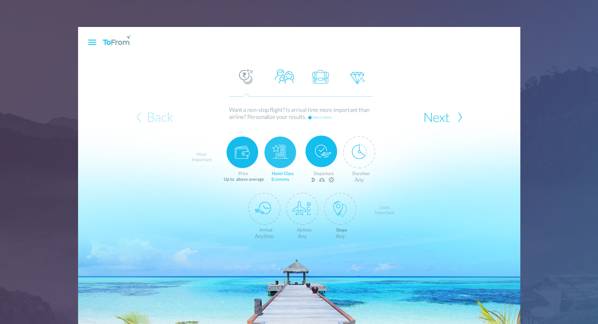
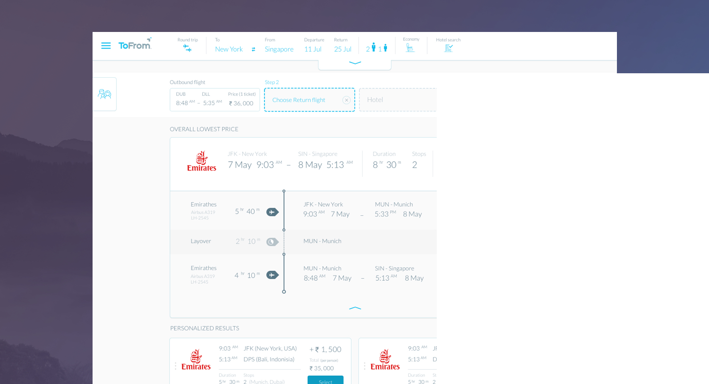
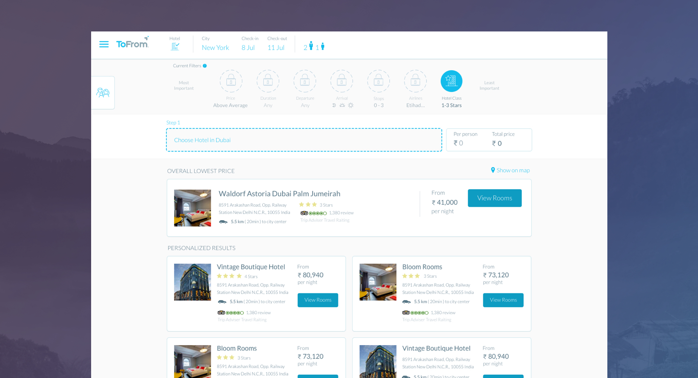

Personalization

The core concept of ToFrom, is the idea that booking for your next trip should be simple and easy. Searching is a hassle in most websites, offering the user too many search options and requiring the user to look hard. With the personalization feature, we ask users who they are upfront as those are conditions that most likely won't change.
Flight Search Design

Our user interface provies a clean view into each trip detail, by using collapsible cards. In addition, users may drag and drop flight options into their trip builder. Through our research, we often found users lost in the flight booking process.
Hotel Search Design

We adapted our flight search design to the hotel search flow.